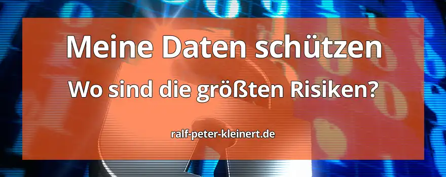

Die Sicherheit der eigenen, persönlichen Daten ist wichtig. Das weiß
jede Computernutzerin und jeder Nutzer. Doch wie kann man seine Daten
besser schützen?
Jeden Tag hören wir von Hackerangriffen, Verschlüsselungs-Malware (Ransomware),
von Viren und Trojanern. Es werden Krankenhäuser mit Malware
angegriffen, ganze Bundesländer werden lahmgelegt, weil Schadsoftwares
in die Computersysteme von Gemeindeverwaltungen eingeschleust werden.
Firmen und Privatleute werden erpresst und sensible Daten werden im
Darknet veröffentlicht. Millionenschäden jedes Jahr. Fotos, Videos und
Dokumente von Privatnutzerinnen und Privatnutzern aber auch von
Unternehmen werden verschlüsselt, gelöscht oder im Internet
veröffentlicht. Daten werden verkauft, manipuliert und es wird großer
Schaden verursacht.
Wie kommt es also dazu und wie kann man sich besser vor Malware,
Viren oder Datenlecks schützen? Wie kann ich meine Daten schützen? Was
sind die Gründe, weshalb Hacker es oft so einfach haben, Daten zu
stehlen und Systeme zu manipulieren? Darauf will ich in diesem Artikel
eingehen, um ihnen die Wichtigkeit aufzuzeigen. Es ist unglaublich
wichtig, seine Daten zu schützen und sein Verhalten auf die Arten der
Bedrohungen auszurichten.
Kostenlose IT-Sicherheits-Bücher & Information via Newsletter
Bleiben Sie informiert, wann es meine Bücher kostenlos in einer Aktion gibt: Mit meinem Newsletter erfahren Sie viermal im Jahr von Aktionen auf Amazon und anderen Plattformen, bei denen meine IT-Sicherheits-Bücher gratis erhältlich sind. Sie verpassen keine Gelegenheit und erhalten zusätzlich hilfreiche Tipps zur IT-Sicherheit. Der Newsletter ist kostenlos und unverbindlich – einfach abonnieren und profitieren!
Was sind eigentlich die Schwachstellen in der Sicherheit von IT-Systemen, Computern, Handys, Tablets?
Die rasant fortschreitende Digitalisierung und der Einzug der Computertechnologie hat unsere Welt in vielerlei Hinsicht verändert und den Übergang zu einer vernetzten Gesellschaft geschaffen. Jeden Tag bewegen wir uns ganz selbstverständlich in dieser digitalen Welt. Doch während der technologische Fortschritt und die Effizienz steigen, uns den Alltag erleichtern, geht damit auch eine zunehmende Gefahr für Firmen und jeden einzelnen von uns einher. Das IT-Sicherheitsrisiko Mensch. In der heutigen, extrem komplexen Welt der IT-Sicherheit, stellt der Mensch eine bedeutende Schwachstelle dar, die wahrscheinlich bedeutendste überhaupt. Das wirft doch die Frage auf, warum der Mensch ein erhebliches Risiko in Bezug auf IT-Security darstellt: Warum ist der Mensch das größte IT-Sicherheitsrisiko?
Menschliche Fehler
Menschliche Fehler sind eine der häufigsten Ursachen für Sicherheitsverletzungen. Von unbeabsichtigten Klicks auf schädliche Links bis hin zu Fahrlässigkeit und Unachtsamkeit im Umgang mit sensiblen Daten. Die Bandbreite menschlicher Fehler ist so vielfältig, dass man sie gar nicht umfassend darstellen kann. Unachtsamkeit, Unwissenheit oder schlichtweg Nachlässigkeit können zu schwerwiegenden Sicherheitslücken führen.
Social Engineering
Kriminelle haben längst erkannt, dass der Mensch selbst oft die schwächste Verbindung in der Sicherheitskette ist. Mit den sogenannten Social Engineering-Techniken nutzen diese Cyberkriminellen menschliche Emotionen, Neugier und Vertrauen aus, um sich Zugriff auf Systeme zu erschleichen oder an Daten wie Kreditkartennummern zu kommen. Phishing-E-Mails, gefälschte Anrufe oder manipulative Social-Media-Nachrichten sind nur einige, sehr wenige Beispiele dafür, wie Cyber-Kriminelle versuchen, Zugang zu sensiblen Informationen und zu IT-Systemen zu erhalten. Auch das Aufkommen neuer Technologien wie KI-Systeme können Hackern das Leben erleichtern und auch ihre Arbeit effizienter machen.
Mangelnde Sensibilisierung
Viele Menschen sind sich der Gefahren im digitalen Raum noch immer nicht ausreichend bewusst, obwohl wir fast täglich in den Nachrichten damit konfrontiert werden. Der umfassende Mangel an Sensibilisierung in Bezug auf IT-Sicherheit führt dazu, dass grundlegende Sicherheitspraktiken nicht nur vernachlässigt, sondern fast schon eklatant ignoriert werden. Passwörter werden schwach und zu kurz gewählt, Passwörter werden für verschiedene Dienste mehrfach benutzt, Software wird nicht aktualisiert und geupdatet, und die Nutzung unsicherer Netzwerke wird oft nicht als Risiko wahrgenommen.
Unsicherer Umgang mit Technologie
Die rasante Weiterentwicklung von Technologien, Computern und Handys führt dazu, dass viele Menschen mit diesen neuesten Entwicklungen nicht mehr Schritt halten können. Dadurch entstehen Unsicherheiten im Umgang mit solchen neuen Anwendungen und Geräten. Oft werden Standardeinstellungen der Hersteller beibehalten, ohne die möglichen Sicherheitsrisiken zu berücksichtigen. Geräte werden einfach genutzt, ohne sich vorher mit den Risiken auseinanderzusetzen, oft sogar ohne die Betriebsanleitung zu lesen.
Menschliche Bequemlichkeit
Bequemlichkeit ist eine treibende Kraft in der modernen, unserer Gesellschaft, und die IT feuert die Bequemlichkeit weiter an. Wurde der Computer nicht entwickelt um unsere Arbeit effizienter und bequemer zu machen? Leider geht diese Bequemlichkeit manchmal und immer, immer öfter auf Kosten der Sicherheit. Das Verwenden von einfachen Passwörtern, das Speichern sensibler Informationen auf unsicheren Geräten oder das Ignorieren von Sicherheitswarnungen sind Beispiele für menschliche Bequemlichkeit, auf die Cyberkriminellen ihr Geschäftsmodell aufbauen.
Fazit: Unsicherheitsfaktor Mensch
Die Sicherheit der digitalen Welt und Gesellschaft hängt maßgeblich von der Fähigkeit der Menschen ab, sich bewusst gegenüber den Gefahren zu verhalten und verantwortungsbewusst mit Technologie umzugehen. Man muss sich immer wieder mit der Thematik auseinandersetzen, besonders, wenn man ein neues, unbekanntes Gerät besitzt. Nur durch umfassende und wiederkehrende Sensibilisierung und Schulungen sowie den Einsatz modernster Sicherheits-Technologien und Maßnahmen kann das Risiko menschlicher Schwächen in der IT-Sicherheit auf ein akzeptables Mittel gesenkt werden. Deshalb habe ich meine Website auf die IT-Sicherheit ausgerichtet.
In unserer zunehmend digitalisierten Umgebung sind Passwörter die erste Verteidigungslinie gegen ungewollten Zugriff und Cyberangriffe. Doch paradoxerweise sind sie oft auch die Achillesferse in IT-Systemen und das Einfallstor für ungewollte Gäste. Dieser Abschnitt beleuchtet, warum Passwörter trotz ihrer scheinbaren Sicherheit zu einem erheblichen Risiko geworden sind. Bitte benutzen sie einen Passwortmanager um sichere Passwörter zu erstellen und diese auch verschlüsselt zu speichern. Dazu habe ich einen extra Artikel geschrieben um es ihnen ein wenig leichter zu machen.
Schwache Passwortauswahl
Ein extrem weit verbreitetes Problem ist die Neigung vieler Menschen, viel zu schwache Passwörter zu wählen. Ja, es gibt inzwischen Top-Listen der schlechtesten Passwörter, welche immer wieder von vielen Menschen genutzt werden. Z.B.: "qwertz", oder "1234567890", oder "MeineKatzeHeißtBob" oder ähnliche Kombinationen, welche durch spezielle Softwares in Sekunden geknackt werden. Häufig werden leicht zu erratende Begriffe, wie Namen, Geburtsdaten oder einfache Wörter verwendet, welche auch oft zu finden sind, wenn jemand einfach ihren Müll durchsucht und vielleicht einen Werbebrief zum Geburtstag findet. Diese Schwäche wird von Angreifern sehr erfolgreich ausgenutzt. Durch Brute-Force-Angriffe (erraten durch permanentes Wechseln des Passwortes) oder das Knacken von Hash-Werten können ebenfalls Zugänge zu Konten erlangt werden. Achten sie auf komplexe, schwer zu erratene Passworte!
Mehrfachverwendung von Passwörtern
Die menschliche Bequemlichkeit, dasselbe Passwort für verschiedene Konten zu verwenden, stellt ebenso ein erhebliches Risiko dar. Einmal erratene Zugangsdaten können auf verschiedenen Diensten passen, wenn ein Nutzer dieselben Passwörter für mehrere Online-Plattformen verwendet. Dann bekommt ein Hacker, welcher das Passwort von Facebook Phishen konnte, eventuell Zugang zu Google, zur E-Mail, zum Telefonanbieter und viele andere Dienste.
Unsichere Speicherung und Übertragung
Der unverschlüsselte Transport von Passwörtern über unsichere Netzwerke (z.B. ein freies WLAN bei McDonalds) und deren unsichere Speicherung auf Servern sind potenzielle Angriffspunkte für Hacker. Datenlecks, Hacks oder ein verlorener Datenträger und unsichere Übertragungen können dazu führen, dass Passwörter in die Hände unbefugter Akteure gelangen und diese dann zugriff auf alle ihre Daten erlangen.
Fehlende Zwei-Faktor-Authentifizierung (2FA), Zwei-Faktor-Authentisierung (2FA)
Die meisten Nutzerinnen und Nutzer setzen weiterhin ausschließlich auf das traditionelle Benutzername-Passwort-System, ohne zusätzlichen Sicherheitsmechanismus wie die Zwei-Faktor-Authentisierung. Die Implementierung (das Aktivieren) von 2FA wird oft vernachlässigt, obwohl 2FA einen erheblichen Schutz vor unbefugtem Zugriff bietet. Sämtliche bekannten Dienste bieten 2 Faktor an und man sollte dies unbedingt einschalten.
Unzureichende Passwortrichtlinien
Unternehmen und Dienstleister setzen nicht immer auf strenge Passwortrichtlinien, obwohl inzwischen fast alle wissen, dass dies notwendig ist. Das Fehlen von Anforderungen an die Passwortkomplexität und regelmäßige Aktualisierungen von Passworten, und der Passwortrichtlinien erleichtert es Angreifern, Zugang zu geschützten Systemen zu erhalten. Sollten die Passwortrichtlinen bei einem Dienst beschränkt sein, sollten sie die maximal mögliche Passwortstärke wählen.
Fazit: Unsicherheitsfaktor Passwort
Passwörter sind, nach wie vor, und bleiben auch weiter eine grundlegende Komponente der digitalen Sicherheit. Aber ihr Missbrauch und ihre Vernachlässigung haben zu erheblichen Sicherheitsrisiken geführt. Die Menschen gehen zu nachlässig damit um. Um diese Risiken zu minimieren, ist es unerlässlich, auf starke und vor allem einzigartige Passwörter zu setzen. Eine regelmäßige Aktualisierung wird noch immer empfohlen. Unternehmen sollten zudem vermehrt und mit Argusaugen auf Sicherheitsmaßnahmen wie die Zwei-Faktor-Authentifizierung setzen. Nur durch ein ganzheitliches Sicherheitsbewusstsein können wir der Verletzlichkeit von Passwörtern in der zunehmend automatisierten und digitalen Welt wirksam entgegenwirken. Ein Passwort-Manager muss zum täglichen Begleiter werden!
In der rasanten Entwicklung, (die noch rasanter werden wird) der Computer und IT-Systeme, der Handys, Fernseher und Tablets übernehmen Softwareanwendungen eine Schlüsselrolle in der Funktionsweise dieser Geräte und in unserem Leben. Doch während die Technologie voranschreitet, bleiben viele Nutzerinnen und Nutzer sowie Unternehmen aufgrund von Updatemüdigkeit und Vernachlässigung von Softwareaktualisierungen auf veralteten Systemen und Anwendungen zurück. Hier beleuchte ich kurz die Risiken und Konsequenzen, die mit veralteter Software und mangelnder Aktualisierungsbereitschaft eine Bedrohung darstellen.
Sicherheitslücken und Exploits
Veraltete Software wird oft zum Einfallstor für Cyberkriminelle, Hackergruppierungen und Hacker. Mit der Zeit werden Sicherheitslücken in älteren Programm-Versionen entdeckt, diese Lücken werden dann fleißig im Internet veröffentlicht und wenn keine Updates durchgeführt werden, bleiben diese Schwachstellen offen und werden dann gerne für Angriffe genutzt. Exploits und Malware nutzen diese Gelegenheiten, um unautorisierten Zugriff zu erlangen oder sensible Daten zu stehlen oder zu verschlüsseln. Dann werden die Besitzer erpresst und für eine Entschlüsselung viel Geld verlangt. Es kommt auch immer wieder vor, dass Unternehmen das Erpressergeld bezahlen und die Daten trotzdem nicht entschlüsselt oder sogar im Darknet veröffentlicht werden.
Fehlende Leistungsoptimierungen
Software-Updates enthalten nicht nur Sicherheitsverbesserungen, sondern auch Leistungsoptimierungen und neue Funktionen. Updatemüdigkeit führt dazu, dass Nutzer von diesen neuen Funktionen, verbesserten Benutzeroberflächen und schnelleren Abläufen abgeschnitten werden. Dies kann zu einem ineffizienten Betrieb und einer verminderten Benutzererfahrung führen, wobei aber der Sicherheitsaspekt meiner Meinung nach der entscheidende Aspekt ist. Wenn eine Funktion nicht da ist, gut. Aber wenn jeder Hacker auf den Computer kommt - ganz schlecht.
Kompatibilitätsprobleme
Mit der Zeit ändert sich nicht nur die Software selbst, sondern auch die Umgebung, in der sie betrieben wird bzw. die Systeme auf denen die Software installiert ist. Veraltete Programme können zu Kompatibilitätsproblemen und Sicherheitsproblemen mit neueren Anwendungen, Betriebssystemen und Hardware führen. Dies erschwert nicht nur die saubere Ausführung der Programme, sondern kann auch zu Funktions- und Sicherheitseinschränkungen führen.
Mangelnde Unterstützung und End-of-Life
Softwarehersteller geben älteren Versionen im Laufe der Zeit den Status "End-of-Life" um zu signalisieren, dass das Produkt nicht weiterentwickelt wird. Das bedeutet im Klartext, dass keine weiteren Sicherheitsupdates oder Supportleistungen angeboten werden. Nutzerinnen und Nutzer, die weiterhin veraltete Software und EOF (End of Life) Programme verwenden, setzen sich einem hohen Risiko aus, da selbst bekannte Sicherheitslücken nicht mehr behoben werden. Diese Sicherheitslücken sind ein gefundenes Fressen für Akteure aus der Cyberkriminalität.
Datenschutzrisiken
In einer Zeit, in der Datenschutz von höchster Bedeutung ist, stellen veraltete Softwareprogramme und nicht aktualisierte Anwendungen ein ernsthaftes Datenschutzrisiko dar, welches auch in Europa, durch die DSGVO unfassbar teuer werden kann. Hacker können veraltete Softwareprodukte nutzen, um persönliche und sensible Informationen abzugreifen, was zum bekannten Identitätsdiebstahl oder anderen Datenschutzverletzungen führen kann. Glauben sie mir, sie wollen nicht, dass jemand in ihrem Namen im Internet tätig wird. Informieren sie sich weiter über Cybersicherheit im Netz, falls die Infos auf meiner Website nicht ausreichen sollten.
Fazit: Updatemüdigkeit
Die Versäumnisse bei der Aktualisierung von Software bergen unüberschaubare Risiken für die Sicherheit der eigenen Daten und natürlich von Daten die anderen gehören. Auch wird die Leistung beeinträchtigt. Die Sicherstellung des Datenschutzes kann mit veralteten Programmen nicht mehr gewährleistet werden. Es ist unerlässlich, Updatemüdigkeit zu überwinden und einen aktiven Ansatz für Softwareaktualisierungen zu verfolgen. Nur durch regelmäßige Updates und die Nutzung aktueller Softwareversionen können Nutzer und Nutzerinnen sowie Unternehmen ihre digitale Umgebung wirksam schützen und von den neuesten Entwicklungen in Technologie und Sicherheit profitieren.
Heutzutage stehen Computer und Mobilgeräte im Mittelpunkt unseres täglichen Lebens. Jeder und jede ist irgendwie im Netz unterwegs. Doch oft wird die potenzielle Gefahr übersehen, die von fehlerhaften Konfigurationen ausgeht. Hier möchte ich den Blick auf die Risiken, die mit falschen Einstellungen und Konfigurationen von Computern und Handys einhergehen richten. Warum sind sie eine ernsthafte Bedrohung für die digitale Sicherheit?
Unsichere Netzwerkkonfiguration
Oftmals werden Computer, Laptops, Handys, Tablets und sogar Smartwatches in öffentlichen Netzwerken (z.B. WLAN in Restaurants, oder WLAN im Bahnhof) genutzt, ohne dass angemessene Sicherheitsvorkehrungen (z.B. VPN) getroffen werden. Die Verwendung von unsicheren WLAN-Verbindungen oder das Ignorieren von Firewall-Einstellungen kann dazu führen, dass sensible Daten während der Übertragung gefährdet sind und Hacker oder schadhafte Systeme sich auf diesen Geräten einloggen.
Standardpasswörter und Zugangsdaten
Die Verwendung von Standardpasswörtern, Mehrfachpasswörtern oder sehr schwachen Zugangsdaten und Passworten ist eine weitverbreitete Konfigurationsfehlerquelle. Diese nachlässige Praxis bietet Hackern und Schadsystemen eine einfache Möglichkeit, auf Geräte zuzugreifen, insbesondere wenn die Werkseinstellungen und Standardeinstellungen nicht geändert wurden.
Mangelnde Verschlüsselung
Die Vernachlässigung von Verschlüsselungseinstellungen auf Computern und Mobilgeräten macht es für Angreifer leicht, auf persönliche Daten zuzugreifen, diese zu stehlen und damit Schindluder zu treiben. Ohne ausreichende Verschlüsselung können selbst einfache Man-in-the-Middle-Angriffe zu Datenschutzverletzungen führen.
Nichtaktualisierte Software und Betriebssysteme
Die Unterlassung von regelmäßigen Software-Updates oder Betriebssystemaktualisierungen ist ein ernsthaftes Sicherheitsproblem geworden. Ohne die neuesten Sicherheitsupdates sind Computer, Handys und Weareble (Smarte Kleingeräte, welche am Körper getragen werden) anfällig für Exploits und Malware, die bekannte Schwachstellen ausnutzen können.
Fehlende Datenschutzeinstellungen
Die Konfiguration von Datenschutzeinstellungen wird oft übersehen (Stichwort: menschliche Bequemlichkeit), insbesondere bei Mobilgeräten. Das Teilen von Standortdaten, unbegrenzter Zugriff von Apps auf persönliche Informationen und mangelnde Kontrolle über Datenfreigaben sind große Risiken, die durch fehlerhafte Konfigurationen nicht nur entstehen können, sondern einem auch teuer zu stehen kommen können.
Empfohlene Artikel IT-Sicherheit
Hier habe ich weitere wichtige Artikel für den sicheren Umgang mit Computern und IT-Systemen.
Über den Autor: Ralf-Peter Kleinert
Über 30 Jahre Erfahrung in der IT legen meinen Fokus auf die Computer- und IT-Sicherheit. Auf meiner Website biete ich detaillierte Informationen zu aktuellen IT-Themen. Mein Ziel ist es, komplexe Konzepte verständlich zu vermitteln und meine Leserinnen und Leser für die Herausforderungen und Lösungen in der IT-Sicherheit zu sensibilisieren.
Aktualisiert: Ralf-Peter Kleinert 24.12.2024